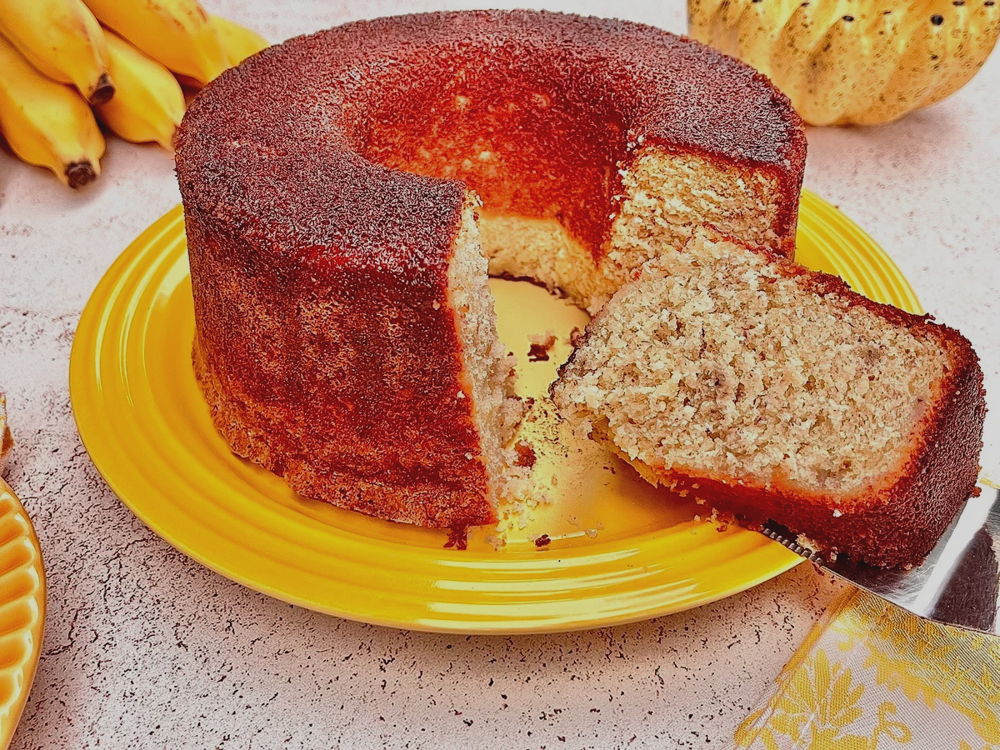

Bolo de banana simples
Uma receita clássica e fácil, perfeita para aproveitar bananas maduras.
Ingredientes
- Banana madura 3 unidades
- Farinha de trigo 2 xícaras
- Açúcar 1 xícara
- Ovos 2 unidades
- Óleo 1/2 xícara
- Fermento em pó 1 colher de sopa
- Pitada de sal a gosto
Modo de preparo
- Preaqueça o forno a 180 °C e unte uma forma com margarina e farinha.
- Amasse as bananas com um garfo até formar um purê homogêneo.
- Em uma tigela, misture o purê de banana, os ovos e o óleo até incorporar bem.
- Adicione o açúcar e misture.
- Peneire a farinha com o fermento e o sal sobre a mistura. Mexa delicadamente até obter uma massa lisa.
- Despeje a massa na forma untada e leve ao forno por aproximadamente 35 minutos.
- Espete um palito no centro: se sair limpo, o bolo está pronto. Deixe esfriar antes de desenformar.